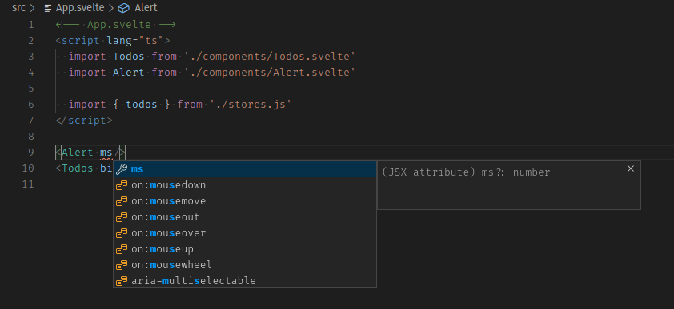

TypeScript support in Svelte
In the last article we learned about Svelte stores and even implemented our own custom store to persist the app's information to Web Storage. We also had a look at using the transition directive to implement animations on DOM elements in Svelte.
We will now learn how to use TypeScript in Svelte applications. First we'll learn what TypeScript is and what benefits it can bring us. Then we'll see how to configure our project to work with TypeScript files. Finally we will go over our app and see what modifications we have to make to fully take advantage of TypeScript features.
| Prerequisites: |
At minimum, it is recommended that you are familiar with the core HTML, CSS, and JavaScript languages, and have knowledge of the terminal/command line. You'll need a terminal with node and npm installed to compile and build your app. |
|---|---|
| Objective: | Learn how to configure and use TypeScript when developing Svelte applications. |
Note that our application is fully functional, and porting it to TypeScript is completely optional. There are different opinions about it, and in this chapter we will talk briefly about the pros and cons of using TypeScript. Even if you are not planning to adopt it, this article will be useful for allowing you to learn what it has to offer and help you make your own decision. If you are not interested at all in TypeScript, you can skip to the next chapter, where we will look at different options for deploying our Svelte applications, further resources, and more.
Code along with us
Git
Clone the GitHub repo (if you haven't already done it) with:
git clone https://github.com/opensas/mdn-svelte-tutorial.git
Then to get to the current app state, run
cd mdn-svelte-tutorial/07-typescript-support
Or directly download the folder's content:
npx degit opensas/mdn-svelte-tutorial/07-typescript-support
Remember to run npm install && npm run dev to start your app in development mode.
REPL
Unfortunately, TypeScript support is not yet available in the REPL.
TypeScript: optional static typing for JavaScript
TypeScript is a superset of JavaScript that provides features such as optional static typing, classes, interfaces, and generics. The goal of TypeScript is to help catch mistakes early through its type system and make JavaScript development more efficient. One of the big benefits is enabling IDEs to provide a richer environment for spotting common errors as you type the code.
Best of all, JavaScript code is valid TypeScript code; TypeScript is a superset of JavaScript. You can rename most of your .js files to .ts files and they will just work.
Our TypeScript code will be able to run everywhere JavaScript can run. How is that possible? TypeScript "transpiles" our code to vanilla JavaScript. That means that it parses TypeScript code and produces the equivalent vanilla JavaScript code for browsers to run.
Note: If you are curious about how TypeScript transpiles our code to JavaScript, you can have a look at the TypeScript Playground.
First-class TypeScript support has been Svelte's most requested feature for quite some time. Thanks to the hard work of the Svelte team, together with many contributors, we have an official solution ready to be put to the test. In this section we'll show you how to set up a Svelte project with TypeScript support to give it a try.
Why TypeScript?
TypeScript's main advantages are:
- Early spotted bugs: The compiler checks types at compile time and provides error reporting.
- Readability: Static typing gives the code more structure, making it self-documenting and more readable.
- Rich IDE support: Type information allows code editors and IDEs to offer features like code navigation, autocompletion, and smarter hints.
- Safer refactoring: Types allows IDEs to know more about your code, and assist you while refactoring large portions of your code base.
- Type inference: Enables you to take advantage of many TypeScript features even without declaring variable types.
- Availability of new and future JavaScript features: TypeScript transpiles many recent JavaScript features to plain old-school JavaScript, allowing you to use them even on user-agents that don't support them natively yet.
TypeScript also has some disadvantages:
- Not true static typing: Types are only checked at compile time, and they are removed from the generated code.
- Steep learning curve: Even though TypeScript is a superset of JavaScript and not a completely new language, there is a considerable learning curve, especially if you have no experience at all with static languages like Java or C#.
- More code: You have to write and maintain more code.
- No replacement for automatic tests: Even though types might help you catch several bugs, TypeScript is not a true replacement for a comprehensive suite of automated tests.
- Boilerplate code: Working with types, classes, interfaces, and generics can lead to over-engineered code bases.
There seems to be a broad consensus that TypeScript is particularly well suited for large-scale projects, with many developers working on the same codebase. And it is indeed being used by several large-scale projects, like Angular 2, Vue 3, Ionic, Visual Studio Code, Jest, and even the Svelte compiler. Nevertheless, some developers prefer to use it even on small projects like the one we are developing.
In the end, it's your decision. In the following sections we hope to give you more evidence to make up your mind about it.
Creating a Svelte TypeScript project from scratch
You can start a new Svelte TypeScript project using the standard template. All you have to do is run the following terminal commands (run them somewhere where you are storing your Svelte test projects — it creates a new directory):
npx degit sveltejs/template svelte-typescript-app
cd svelte-typescript-app
node scripts/setupTypeScript.js
This creates a starter project that includes TypeScript support, which you can then modify as you wish.
Then you'll have to tell npm to download dependencies and start the project in development mode, as we usually do:
npm install
npm run dev
Adding TypeScript support to an existing Svelte Project
To add TypeScript support to an existing Svelte project, you can follow these instructions. Alternatively, you can download the setupTypeScript.js file to a scripts folder inside your project's root folder, and then run node scripts/setupTypeScript.js.
You can even use degit to download the script. That's what we will do to start porting our application to TypeScript.
Note: Remember that you can run npx degit opensas/mdn-svelte-tutorial/07-typescript-support svelte-todo-typescript to get the complete to-do list application in JavaScript before you start porting it to TypeScript.
Go to the root directory of the project and enter these commands:
npx degit sveltejs/template/scripts scripts # download script file to a scripts folder
node scripts/setupTypeScript.js # run it
Converted to TypeScript.
You will need to re-run your dependency manager to get started.
npm install # download new dependencies
npm run dev # start the app in development mode
These instructions apply to any Svelte project you'd like to convert to TypeScript. Just take into account that the Svelte community is constantly improving Svelte TypeScript support, so you should run npm update regularly to take advantage of the latest changes.
Note: if you find any trouble working with TypeScript inside a Svelte application, have a look at this troubleshooting/FAQ section about TypeScript support.
As we said before, TypeScript is a superset of JavaScript, so your application will run without modifications. Currently you will be running a regular JavaScript application with TypeScript support enabled, without taking advantage of any of the features that TypeScript provides. You can now start adding types progressively.
Once you have TypeScript configured, you can start using it from a Svelte component by just adding a <script lang='ts'> at the beginning of the script section. To use it from regular JavaScript files, just change the file extension from .js to .ts. You'll also have to update any corresponding import statements (don't include the .ts in your import statements; TypeScript chose to omit the extensions).
Note: Using TypeScript in component markup sections is not supported yet. You'll have to use JavaScript from the markup, and TypeScript in the <script lang='ts'> section.
Improved developer experience with TypeScript
TypeScript provides code editors and IDEs with lots of information to allow them to deliver a friendlier development experience.
We'll use Visual Studio Code to do a quick test and see how we can get autocompletion hints and type-checking as we're writing components.
Note: If you don't wish to use VS Code, we also provide instructions for using TypeScript error checking from the terminal instead, slightly later on.
There is work in progress to support TypeScript in Svelte projects in several code editors; the most complete support so far is available in the Svelte for VS Code extension, which is developed and maintained by the Svelte team. This extension offers type checking, inspecting, refactoring, intellisense, hover-information, auto-completion, and other features. This kind of developer assistance is another good reason to start using TypeScript in your projects.
Note: Make sure you are using Svelte for VS Code and NOT the old "Svelte" by James Birtles, which has been discontinued. In case you have it installed, you should uninstall it and install the official Svelte extension instead.
Assuming you are inside the VS Code application, from the root of your project's folder, type code . (the trailing dot tells VS Code to open the current folder) to open the code editor. VS Code will tell you that there are recommended extensions to install.

Clicking Install all will install Svelte for VS Code.

We can also see that the setupTypeScript.js file made a couple of changes to our project. The main.js file has been renamed to main.ts, which means that VS Code can provide hover-information on our Svelte components:

We also get type checking for free. If we pass an unknown property in the options parameter of the App constructor (for example a typo like traget instead of target), TypeScript will complain:

In the App.svelte component, the setupTypeScript.js script has added the lang="ts" attribute to the <script> tag. Moreover, thanks to type inference, in many cases we won't even need to specify types to get code assistance. For example, if you start adding an ms property to the Alert component call, TypeScript will infer from the default value that the ms property should be a number:

And if you pass something that is not a number, it will complain about it:

The application template has a check script configured that runs svelte-check against your code. This package allows you to detect errors and warnings normally displayed by a code editor from the command line, which makes it pretty useful for running it in a continuous integration (CI) pipeline. Just run npm run check to check for unused CSS, and return A11y hints and TypeScript compile errors.
In this case, if you run npm run check (either in the VS Code console or terminal) you will get the following error:

Even better, if you run it from the VS Code integrated terminal (you can open it with the Ctrl + ` keyboard shortcut), Cmd/Ctrl clicking on the file name will take you to the line containing the error.
You can also run the check script in watch mode with npm run check -- --watch. In this case, the script will execute whenever you change any file. If you are running this in your regular terminal, keep it running in the background in a separate terminal window so that it can keep reporting errors but won't interfere with other terminal usage.
Creating a custom type
TypeScript supports structural typing. Structural typing is a way of relating types based solely on their members, even if you do not explicitly define the type.
We'll define a TodoType type to see how TypeScript enforces that anything passed to a component expecting a TodoType will be structurally compatible with it.
- Inside the
srcfolder create atypesfolder. - Add a
todo.type.tsfile inside it. - Give
todo.type.tsthe following content:export type TodoType = { id: number name: string completed: boolean }Note: The Svelte template uses svelte-preprocess 4.0.0 to support TypeScript. From that version onward you have to use
export/importtype syntax to import types and interfaces. Check this section of the troubleshooting guide for more information. - Now we'll use
TodoTypefrom ourTodo.sveltecomponent. First add thelang="ts"to our<script>tag. - Let's
importthe type and use it to declare thetodoproperty. Replace theexport let todoline with the following:import type { TodoType } from "../types/todo.type"; export let todo: TodoType;Note: Another reminder: When importing a
.tsfile, you have to omit the extension. Check theimportsection of the TypeScript manual for more information. - Now from
Todos.sveltewe will instantiate aTodocomponent with a literal object as its parameter before the call to theMoreActionscomponent, like this:<hr /> <Todo todo={ { name: 'a new task with no id!', completed: false } } /> <!-- MoreActions --> <MoreActions {todos} -
Add the
lang='ts'to the<script>tag of theTodos.sveltecomponent so that it knows to use the type checking we have specified. We will get the following error:
By now you should get an idea about the kind of assistance we can get from TypeScript when building Svelte projects.
Now we will undo these changes in order to start porting our application to TypeScript, so we won't be bothered with all the check warnings.
- Remove the flawed to-do and the
lang='ts'attribute from theTodos.sveltefile. - Also remove the import of
TodoTypeand thelang='ts'fromTodo.svelte.
We'll take care of them properly later on.
Porting our to-do list app to TypeScript
Now we are ready to start porting our to-do list application to take advantage of all the features that TypeScript offers to us.
Let's start by running the check script in watch mode inside the project root:
npm run check -- --watch
This should output something like the following:
svelte-check "--watch"
Loading svelte-check in workspace: ./svelte-todo-typescript
Getting Svelte diagnostics...
====================================
svelte-check found no errors and no warnings
Note that if you are using a supporting code editor like VS Code, a simple way to start porting a Svelte component is to just add the <script lang='ts'> at the top of your component and look for the three-dotted hints:
Alert.svelte
Let's start with our Alert.svelte component.
- Add
lang="ts"into yourAlert.sveltecomponent's<script>tag. You'll see some warnings in the output of thecheckscript:$ npm run check -- --watch > svelte-check "--watch" ./svelte-todo-typescript Getting Svelte diagnostics... ==================================== ./svelte-todo-typescript/src/components/Alert.svelte:8:7 Warn: Variable 'visible' implicitly has an 'any' type, but a better type may be inferred from usage. (ts) let visible ./svelte-todo-typescript/src/components/Alert.svelte:9:7 Warn: Variable 'timeout' implicitly has an 'any' type, but a better type may be inferred from usage. (ts) let timeout ./svelte-todo-typescript/src/components/Alert.svelte:11:28 Warn: Parameter 'message' implicitly has an 'any' type, but a better type may be inferred from usage. (ts) Change = (message, ms) => { ./svelte-todo-typescript/src/components/Alert.svelte:11:37 Warn: Parameter 'ms' implicitly has an 'any' type, but a better type may be inferred from usage. (ts) (message, ms) => { - You can fix these by specifying the corresponding types, like so:
export let ms = 3000 let visible: boolean let timeout: number const onMessageChange = (message: string, ms: number) => { clearTimeout(timeout) if (!message) { // hide Alert if message is emptyNote: There's no need to specify the
mstype withexport let ms:number = 3000, because TypeScript is already inferring it from its default value.
MoreActions.svelte
Now we'll do the same for the MoreActions.svelte component.
- Add the
lang='ts'attribute, like before. TypeScript will warn us about thetodosprop and thetvariable in the call totodos.filter((t) =>...).Warn: Variable 'todos' implicitly has an 'any' type, but a better type may be inferred from usage. (ts) export let todos Warn: Parameter 't' implicitly has an 'any' type, but a better type may be inferred from usage. (ts) $: completedTodos = todos.filter((t) => t.completed).length
- We will use the
TodoTypewe already defined to tell TypeScript thattodosis aTodoTypearray. Replace theexport let todosline with the following:import type { TodoType } from "../types/todo.type"; export let todos: TodoType[];
Notice that now TypeScript can infer that the t variable in todos.filter((t) => t.completed) is of type TodoType. Nevertheless, if we think it makes our code easier to read, we could specify it like this:
$: completedTodos = todos.filter((t: TodoType) => t.completed).length;
Most of the time, TypeScript will be able to correctly infer the reactive variable type, but sometimes you might get an "implicitly has an 'any' type" error when working with reactive assignments. In those cases you can declare the typed variable in a different statement, like this:
let completedTodos: number;
$: completedTodos = todos.filter((t: TodoType) => t.completed).length;
You can't specify the type in the reactive assignment itself. The statement $: completedTodos: number = todos.filter[...] is invalid. For more information, read How do I type reactive assignments? / I get an "implicitly has type 'any' error".
FilterButton.svelte
Now we'll take care of the FilterButton component.
- Add the
lang='ts'attribute to the<script>tag, as usual. You'll notice there are no warnings — TypeScript infers the type of the filter variable from the default value. But we know that there are only three valid values for the filter: all, active, and completed. So we can let TypeScript know about them by creating an enum Filter. - Create a
filter.enum.tsfile in thetypesfolder. - Give it the following contents:
export enum Filter { ALL = 'all', ACTIVE = 'active', COMPLETED = 'completed', } - Now we will use this from the
FilterButtoncomponent. Replace the content of theFilterButton.sveltefile with the following:<!-- components/FilterButton.svelte --> <script lang='ts'> import { Filter } from '../types/filter.enum' export let filter: Filter = Filter.ALL </script> <div class="filters btn-group stack-exception"> <button class="btn toggle-btn" class:btn__primary={filter === Filter.ALL} aria-pressed={filter === Filter.ALL} on:click={() => filter = Filter.ALL} > <span class="visually-hidden">Show</span> <span>All</span> <span class="visually-hidden">tasks</span> </button> <button class="btn toggle-btn" class:btn__primary={filter === Filter.ACTIVE} aria-pressed={filter === Filter.ACTIVE} on:click={() => filter = Filter.ACTIVE} > <span class="visually-hidden">Show</span> <span>Active</span> <span class="visually-hidden">tasks</span> </button> <button class="btn toggle-btn" class:btn__primary={filter === Filter.COMPLETED} aria-pressed={filter === Filter.COMPLETED} on:click={() => filter = Filter.COMPLETED} > <span class="visually-hidden">Show</span> <span>Completed</span> <span class="visually-hidden">tasks</span> </button> </div>
Here we are just importing the Filter enum and using it instead of the string values we used previously.
Todos.svelte
We will also use the Filter enum in the Todos.svelte component.
- First, add the
lang='ts'attribute to it, as before. - Next, import the
Filterenum. Add the followingimportstatement below your existing ones:import { Filter } from "../types/filter.enum"; - Now we will use it whenever we reference the current filter. Replace your two filter-related blocks with the following:
let filter: Filter = Filter.ALL; const filterTodos = (filter: Filter, todos) => filter === Filter.ACTIVE ? todos.filter((t) => !t.completed) : filter === Filter.COMPLETED ? todos.filter((t) => t.completed) : todos; $: { if (filter === Filter.ALL) { $alert = "Browsing all todos"; } else if (filter === Filter.ACTIVE) { $alert = "Browsing active todos"; } else if (filter === Filter.COMPLETED) { $alert = "Browsing completed todos"; } } -
checkwill still give us some warnings fromTodos.svelte. Let's fix them. Start by importing theTodoTypeand telling TypeScript that ourtodosvariable is an array ofTodoType. Replaceexport let todos = []with the following two lines:import type { TodoType } from "../types/todo.type"; export let todos: TodoType[] = []; -
Next we'll specify all the missing types. The variable
todosStatus, which we used to programmatically access the methods exposed by theTodosStatuscomponent, is of typeTodosStatus. And eachtodowill be of typeTodoType. Update your<script>section to look like this:import FilterButton from './FilterButton.svelte' import Todo from './Todo.svelte' import MoreActions from './MoreActions.svelte' import NewTodo from './NewTodo.svelte' import TodosStatus from './TodosStatus.svelte' import { alert } from '../stores' import { Filter } from '../types/filter.enum' import type { TodoType } from '../types/todo.type' export let todos: TodoType[] = [] let todosStatus: TodosStatus // reference to TodosStatus instance $: newTodoId = todos.length > 0 ? Math.max(...todos.map((t) => t.id)) + 1 : 1 function addTodo(name: string) { todos = [...todos, { id: newTodoId, name, completed: false }] $alert = `Todo '${name}' has been added` } function removeTodo(todo: TodoType) { todos = todos.filter((t) => t.id !== todo.id) todosStatus.focus() // give focus to status heading $alert = `Todo '${todo.name}' has been deleted` } function updateTodo(todo: TodoType) { const i = todos.findIndex((t) => t.id === todo.id) if (todos[i].name !== todo.name) $alert = `todo '${todos[i].name}' has been renamed to '${todo.name}'` if (todos[i].completed !== todo.completed) $alert = `todo '${todos[i].name}' marked as ${todo.completed ? 'completed' : 'active'}` todos[i] = { ...todos[i], ...todo } } let filter: Filter = Filter.ALL const filterTodos = (filter: Filter, todos: TodoType[]) => filter === Filter.ACTIVE ? todos.filter((t) => !t.completed) : filter === Filter.COMPLETED ? todos.filter((t) => t.completed) : todos $: { if (filter === Filter.ALL) { $alert = 'Browsing all todos'; } else if (filter === Filter.ACTIVE) { $alert = 'Browsing active todos'; } else if (filter === Filter.COMPLETED) { $alert = 'Browsing completed todos'; } } const checkAllTodos = (completed: boolean) => { todos = todos.map((t) => ({...t, completed})) $alert = `${completed ? 'Checked' : 'Unchecked'} ${todos.length} todos` } const removeCompletedTodos = () => { $alert = `Removed ${todos.filter((t) => t.completed).length} todos` todos = todos.filter((t) => !t.completed) }
TodosStatus.svelte
We are encountering the following errors related to passing todos to the TodosStatus.svelte (and Todo.svelte) components:
./src/components/Todos.svelte:70:39
Error: Type 'TodoType[]' is not assignable to type 'undefined'. (ts)
<TodosStatus bind:this={todosStatus} {todos} />
./src/components/Todos.svelte:76:12
Error: Type 'TodoType' is not assignable to type 'undefined'. (ts)
<Todo {todo}
This is because the todos prop in the TodosStatus component has no default value, so TypeScript has inferred it to be of type undefined, which is not compatible with an array of TodoType. The same thing is happening with our Todo component.
Let's fix it.
- Open the file
TodosStatus.svelteand add thelang='ts'attribute. - Then import the
TodoTypeand declare thetodosprop as an array ofTodoType. Replace the first line of the<script>section with the following:import type { TodoType } from "../types/todo.type"; export let todos: TodoType[]; - We will also specify the
headingEl, which we used to bind to the heading tag, as anHTMLElement. Update thelet headingElline with the following:let headingEl: HTMLElement; -
Finally, you'll notice the following error reported, related to where we set the
tabindexattribute. That's because TypeScript is type checking the<h2>element and expectstabindexto be of typenumber. To fix it, replace
To fix it, replace tabindex="-1"withtabindex={-1}, like this:This way TypeScript can prevent us from incorrectly assigning it to a string variable.<h2 id="list-heading" bind:this="{headingEl}" tabindex="{-1}"> {completedTodos} out of {totalTodos} items completed </h2>
NewTodo.svelte
Next we will take care of NewTodo.svelte.
- As usual, add the
lang='ts'attribute. - The warning will indicate that we have to specify a type for the
nameElvariable. Set its type toHTMLElementlike this:let nameEl: HTMLElement; // reference to the name input DOM node - Last for this file, we need to specify the correct type for our
autofocusvariable. Update its definition like this:export let autofocus: boolean = false;
Todo.svelte
Now the only warnings that npm run check emits are triggered by calling the Todo.svelte component. Let's fix them.
- Open the
Todo.sveltefile, and add thelang='ts'attribute. - Let's import the
TodoType, and set the type of thetodoprop. Replace theexport let todoline with the following:import type { TodoType } from "../types/todo.type"; export let todo: TodoType; -
The first warning we get is TypeScript telling us to define the type of the
update()function'supdatedTodovariable. This can be a little tricky becauseupdatedTodocontains only the attributes of thetodothat have been updated. That means it's not a completetodo— it only has a subset of atodo's properties. For these kinds of cases, TypeScript provides several utility types to make it easier to apply these common transformations. What we need right now is thePartial<T>utility, which allows us to represent all subsets of a given type. The partial utility returns a new type based on the typeT, where every property ofTis optional. We'll use it in theupdate()function — update yours like so:With this we are telling TypeScript that thefunction update(updatedTodo: Partial<TodoType>) { todo = { ...todo, ...updatedTodo }; // applies modifications to todo dispatch("update", todo); // emit update event }updatedTodovariable will hold a subset of theTodoTypeproperties. - Now svelte-check tells us that we have to define the type of our action function parameters:
We just have to define the node variable to be of type
./07-next-steps/src/components/Todo.svelte:45:24 Warn: Parameter 'node' implicitly has an 'any' type, but a better type may be inferred from usage. (ts) const focusOnInit = (node) => node && typeof node.focus === 'function' && node.focus() ./07-next-steps/src/components/Todo.svelte:47:28 Warn: Parameter 'node' implicitly has an 'any' type, but a better type may be inferred from usage. (ts) const focusEditButton = (node) => editButtonPressed && node.focus()HTMLElement. In the two lines indicated above, replace the first instance ofnodewithnode: HTMLElement.
actions.js
Next we'll take care of the actions.js file.
- Rename it to
actions.tsand add the type of the node parameter. It should end up looking like this:// actions.ts export function selectOnFocus(node: HTMLInputElement) { if (node && typeof node.select === "function") { // make sure node is defined and has a select() method const onFocus = () => node.select(); // event handler node.addEventListener("focus", onFocus); // when node gets focus call onFocus() return { destroy: () => node.removeEventListener("focus", onFocus), // this will be executed when the node is removed from the DOM }; } } - Now update
Todo.svelteandNewTodo.sveltewhere we import the actions file. Remember that imports in TypeScript don't include the file extension. In each case it should end up like this:import { selectOnFocus } from "../actions";
Migrating the stores to TypeScript
Now we have to migrate the stores.js and localStore.js files to TypeScript.
Tip: the script npm run check, which uses the svelte-check tool, will only check our application's .svelte files. If you want to also check the .ts files, you can run npm run check && npx tsc --noemit, which tells the TypeScript compiler to check for errors without generating the .js output files. You could even add a script to your package.json file that runs that command.
We'll start with stores.js.
- Rename the file to
stores.ts. - Set the type of our
initialTodosarray toTodoType[]. This is how the contents will end up:// stores.ts import { writable } from "svelte/store"; import { localStore } from "./localStore.js"; import type { TodoType } from "./types/todo.type"; export const alert = writable("Welcome to the To-Do list app!"); const initialTodos: TodoType[] = [ { id: 1, name: "Visit MDN web docs", completed: true }, { id: 2, name: "Complete the Svelte Tutorial", completed: false }, ]; export const todos = localStore("mdn-svelte-todo", initialTodos); - Remember to update the
importstatements inApp.svelte,Alert.svelte, andTodos.svelte. Just remove the.jsextension, like this:import { todos } from "../stores";
Now onto localStore.js.
Update the import statement in stores.ts like so:
import { localStore } from "./localStore";
- Start by renaming the file to
localStore.ts. -
TypeScript is telling us to specify the type of the
key,initial, andvaluevariables. The first one is easy: the key of our local web storage should be a string. Butinitialandvalueshould be any object that could be converted to a valid JSON string with theJSON.stringifymethod, meaning any JavaScript object with a couple limitations: for example,undefined, functions, and symbols are not valid JSON values. So we'll create the typeJsonValueto specify these conditions. Create the filejson.type.tsin thetypesfolder. - Give it the following content:
The
export type JsonValue = | string | number | boolean | null | JsonValue[] | { [key: string]: JsonValue };|operator lets us declare variables that could store values of two or more types. AJsonValuecould be a string, a number, a boolean, and so on. In this case we are also making use of recursive types to specify that aJsonValuecan have an array ofJsonValueand also an object with properties of typeJsonValue. - We will import our
JsonValuetype and use it accordingly. Update yourlocalStore.tsfile like this:// localStore.ts import { writable } from "svelte/store"; import type { JsonValue } from "./types/json.type"; export const localStore = (key: string, initial: JsonValue) => { // receives the key of the local storage and an initial value const toString = (value: JsonValue) => JSON.stringify(value, null, 2); // helper function const toObj = JSON.parse; // helper function if (localStorage.getItem(key) === null) { // item not present in local storage localStorage.setItem(key, toString(initial)); // initialize local storage with initial value } const saved = toObj(localStorage.getItem(key)); // convert to object const { subscribe, set, update } = writable(saved); // create the underlying writable store return { subscribe, set: (value: JsonValue) => { localStorage.setItem(key, toString(value)); // save also to local storage as a string return set(value); }, update, }; };
Now if we try to create a localStore with something that cannot be converted to JSON via JSON.stringify(), for example an object with a function as a property, VS Code/validate will complain about it:

And best of all, it will even work with the $store auto-subscription syntax. If we try to save an invalid value to our todos store using the $store syntax, like this:
<!-- App.svelte -->
<script lang="ts">
import Todos from "./components/Todos.svelte";
import Alert from "./components/Alert.svelte";
import { todos } from "./stores";
// this is invalid, the content cannot be converted to JSON using JSON.stringify
$todos = { handler: () => {} };
</script>
The check script will report the following error:
> npm run check
Getting Svelte diagnostics...
====================================
./svelte-todo-typescript/src/App.svelte:8:12
Error: Argument of type '{ handler: () => void; }' is not assignable to parameter of type 'JsonValue'.
Types of property 'handler' are incompatible.
Type '() => void' is not assignable to type 'JsonValue'.
Type '() => void' is not assignable to type '{ [key: string]: JsonValue; }'.
Index signature is missing in type '() => void'. (ts)
$todos = { handler: () => {} }
This is another example of how specifying types can make our code more robust and help us catch more bugs before they get into production.
And that's it. We've converted our whole application to use TypeScript.
Bulletproofing our stores with Generics
Our stores have already been ported to TypeScript, but we can do better. We shouldn't need to store any kind of value — we know that the alert store should contain string messages, and the to-dos store should contain an array of TodoType, etc. We can let TypeScript enforce this using TypeScript Generics. Let's find out more.
Understanding TypeScript generics
Generics allow us to create reusable code components that work with a variety of types instead of a single type. They can be applied to interfaces, classes, and functions. Generic types are passed as parameters using a special syntax: they are specified between angle-brackets, and by convention are denoted with an upper-cased single char letter. Generic types allows us to capture the types provided by the user to be used later.
Let's see a quick example, a simple Stack class that lets us push and pop elements, like this:
export class Stack {
private elements = []
push = (element) => this.elements.push(element)
pop() {
if (this.elements.length === 0) throw new Error('The stack is empty!')
return this.elements.pop()
}
}
In this case elements is an array of type any, and accordingly the push() and pop() methods both receive and return a variable of type any. So it's perfectly valid to do something like the following:
const anyStack = new Stack();
anyStack.push(1);
anyStack.push("hello");
But what if we wanted to have a Stack that would only work with type string? We could do the following:
export class StringStack {
private elements: string[] = []
push = (element: string) => this.elements.push(element)
pop(): string {
if (this.elements.length === 0) throw new Error('The stack is empty!')
return this.elements.pop()
}
}
That would work. But if we wanted to work with numbers, we would then have to duplicate our code and create a NumberStack class. And how could we handle a stack of types we don't know yet, and that should be defined by the consumer?
To solve all these problems, we can use generics.
This is our Stack class reimplemented using generics:
export class Stack<T> {
private elements: T[] = []
push = (element: T): number => this.elements.push(element)
pop(): T {
if (this.elements.length === 0) throw new Error('The stack is empty!')
return this.elements.pop()
}
}
We define a generic type T and then use it like we would normally use a specific type. Now elements is an array of type T, and push() and pop() both receive and return a variable of type T.
This is how we would use our generic Stack:
const numberStack = new Stack<number>()
numberStack.push(1)
Now TypeScript knows that our stack can only accept numbers, and will issue an error if we try to push anything else:
TypeScript can also infer generic types by its usage. Generics also support default values and constraints.
Generics are a powerful feature that allows our code to abstract away from the specific types being used, making it more reusable and generic without giving up on type safety. To learn more about it, check out the TypeScript Introduction to Generics.
Using Svelte stores with generics
Svelte stores support generics out of the box. And, because of generic type inference, we can take advantage of it without even touching our code.
If you open the file Todos.svelte and assign a number type to our $alert store, you'll get the following error:

That's because when we defined our alert store in the stores.ts file with:
export const alert = writable("Welcome to the To-Do list app!");
TypeScript inferred the generic type to be string. If we wanted to be explicit about it, we could do the following:
export const alert = writable<string>("Welcome to the To-Do list app!");
Now we'll make our localStore store support generics. Remember that we defined the JsonValue type to prevent the usage of our localStore store with values that cannot be persisted using JSON.stringify(). Now we want the consumers of localStore to be able to specify the type of data to persist, but instead of working with any type, they should comply with the JsonValue type. We'll specify that with a Generic constraint, like this:
export const localStore = <T extends JsonValue>(key: string, initial: T)
We define a generic type T and specify that it must be compatible with the JsonValue type. Then we'll use the T type appropriately.
Our localStore.ts file will end up like this — try the new code now in your version:
// localStore.ts
import { writable } from 'svelte/store'
import type { JsonValue } from './types/json.type'
export const localStore = <T extends JsonValue>(key: string, initial: T) => { // receives the key of the local storage and an initial value
const toString = (value: T) => JSON.stringify(value, null, 2) // helper function
const toObj = JSON.parse // helper function
if (localStorage.getItem(key) === null) { // item not present in local storage
localStorage.setItem(key, toString(initial)) // initialize local storage with initial value
}
const saved = toObj(localStorage.getItem(key)) // convert to object
const { subscribe, set, update } = writable<T>(saved) // create the underlying writable store
return {
subscribe,
set: (value: T) => {
localStorage.setItem(key, toString(value)) // save also to local storage as a string
return set(value)
},
update
}
}
And thanks to generic type inference, TypeScript already knows that our $todos store should contain an array of TodoType:
Once again, if we wanted to be explicit about it, we could do so in the stores.ts file like this:
const initialTodos: TodoType[] = [
{ id: 1, name: 'Visit MDN web docs', completed: true },
{ id: 2, name: 'Complete the Svelte Tutorial', completed: false },
]
export const todos = localStore<TodoType[]>('mdn-svelte-todo', initialTodos)
That will do for our brief tour of TypeScript Generics.
The code so far
Git
To see the state of the code as it should be at the end of this article, access your copy of our repo like this:
cd mdn-svelte-tutorial/08-next-steps
Or directly download the folder's content:
npx degit opensas/mdn-svelte-tutorial/08-next-steps
Remember to run npm install && npm run dev to start your app in development mode.
REPL
As we said earlier, TypeScript is not yet available in the REPL.
Summary
In this article we took our to-do list application and ported it to TypeScript.
We first learnt about TypeScript and what advantages it can bring us. Then we saw how to create a new Svelte project with TypeScript support. We also saw how to convert an existing Svelte project to use TypeScript — our to-do list app.
We saw how to work with Visual Studio Code and the Svelte extension to get features like type checking and auto-completion. We also used the svelte-check tool to inspect TypeScript issues from the command line.
In the next article we will learn how to compile and deploy our app to production. We will also see which resources are available online to go further with learning Svelte.
In this module
- Introduction to client-side frameworks
- Framework main features
- React
- Ember
- Vue
- Getting started with Vue
- Creating our first Vue component
- Rendering a list of Vue components
- Adding a new todo form: Vue events, methods, and models
- Styling Vue components with CSS
- Using Vue computed properties
- Vue conditional rendering: editing existing todos
- Focus management with Vue refs
- Vue resources
- Svelte
- Angular